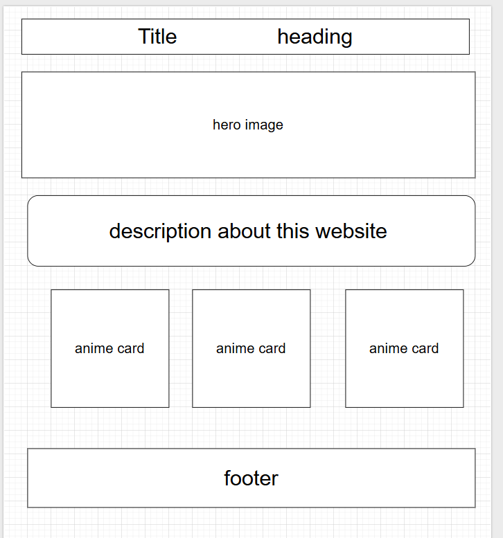
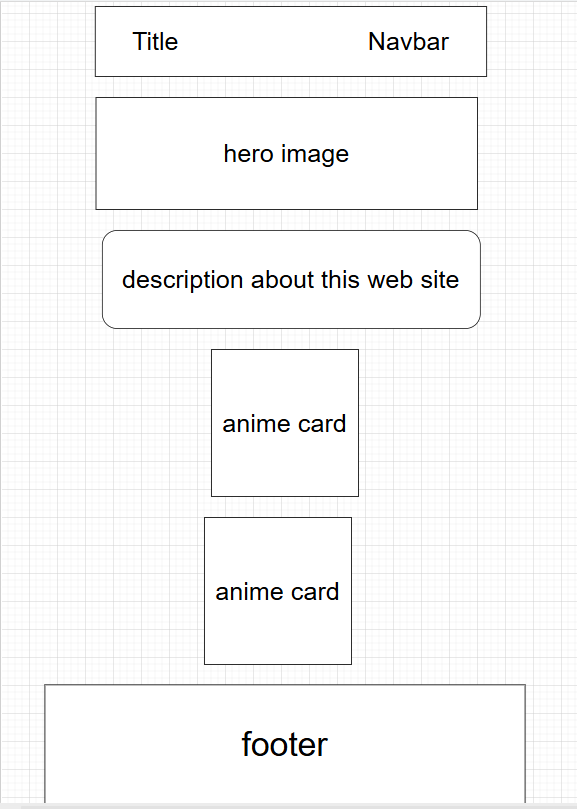

Site Name
Anime Library
This name represents a website that serves as a collection of anime information
Site purpose
for the people who are looking for new anime
The site helps people who are looking for new anime to watch by providing anime recommendations based on genres, ratings, and popularity.
Senarios
for the people who are looking for new anime
Are there any completed anime series?
What are some recent anime?
Color Scheme
#6c63ff: heading and navigation
#f5f5f5: main background color
#333333: text color
Typography
Robot: Used for body text
Poppins: used for heading and navigation menus
wireframe

